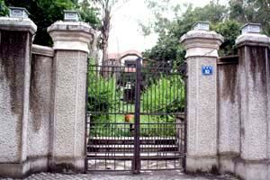
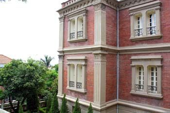
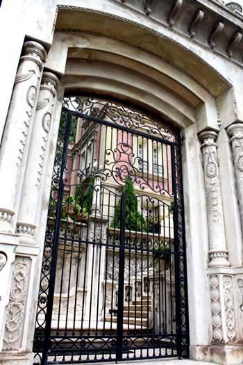
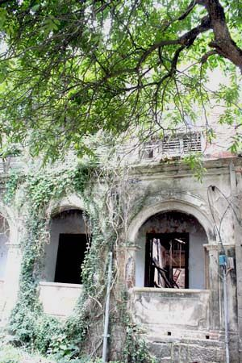
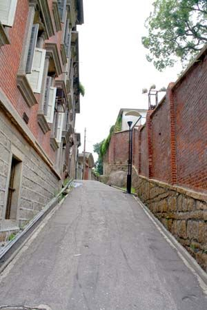

失落的岛屿
这个岛屿因为这块礁石而命名，岛屿的名字随着出色的建筑、音乐和文化名人而闻名。这个面积不到两平方公里的小岛，仿佛每幢幽静的房子里，都曾养育出世界名人。
独特的文化是上百年，由财富为根基，自然形成的灵魂的精髓。小岛的开端，即是一段辉煌的序幕。它没有经历过人为的贫困，不知晓人间的疾苦，就像一位朋友说过的“艺术太高贵了”，于是，小岛才可能名医、名钢琴家、名文学家、名诗人、名体育教育家……辈出。这些身份，都是在衣食无忧的兴趣中摆玩而出的。
从小，耳闻目睹，我们知道什么叫做精致和精致的极致之后，返璞归真的优越感。骨子里生来的清高与寡欲，很自然的，再传给后代。
我从小的朋友皆已离开小岛，早晚先后而已，每个人的儿子或女儿，气质间都有一抹淡定，眉宇中皆有一丝愁郁，说玉树临风也好，说气宇轩昂也罢，我们知道我们未来的孩子一定会是这副摸样。虽然，他们并不生长在岛上。
从小，我喜欢用木头块搭“房子”，我说，长大了我要盖房子。岛民无论是不是艺术家、诗人或音乐家，每个人天生都染了那么一点怠惰与闲雅。
此岛，就是一座大花园，我们在花园的亭台楼阁和花木草丛中穿梭游戏长大。
无声旋转的大吊扇，屋高4米的室内空间，宽敞的百叶窗，灿烂的阳光、潮湿的空气、沙滩与海，还有芭蕉叶、棕榈树……所有殖民地的元素，都会让我挑起久远的记忆，无论走过世界哪一个角落，总能看到似曾相识的一条小巷，一段台阶，一个面海的大阳台，甚至相似的湿度与温度……
其实，有一阵子，我并不想回去。这里，不尽然都是愉快的记忆。虽然，在这种地方成长，本应该拥有无忧无虑的童年，奇怪的是，我却常在白日黑夜，因著一段台阶，一个木头柜子，一桩罗马石柱，一阵相似的风……突然依稀地想起它。
这条放学后，大家蜂湧而出的后门小径，左边围墙内是著名的杨家园。我在美国一间小教会，遇到过一位憔悴的女医师，据称是杨家园众多孩子中最小的一个，很小的时候就已离开，放弃祖辈积攒下来的庞大家业，再也没有回去过。若依当年的大小姐，岂有需要为生计而奔波忙碌？为她的孩子是否能继续学医而忧患？
更小的时候，在这个教堂出出入入，我总是无聊地擡头盯着高大无比的天花板，几盏大吊扇急速地旋转，怀疑它们是否会飞落而下……敞得极开的高大的门窗，阳光洒满一院落花草的灿烂……
父与母几乎一步都不踏入，信仰和个性的分歧很早已分道而驰。在我眼里，他俩是异类，与这个环境格格不入。不提岛上各种家庭出身，书香门第是排不上号的，或富或贵，或买办或银行家的后代，或外国领事的家眷，连保守的牧师家也比我们开明得多。母亲及其厌恶有我这样一个并不显小家碧玉的女儿。
我从小就知道门第等级，怪不得我的势利。在这里生活着，谁天生骨子里没有一些傲慢与清高。对岸的闹市里，一听说谁家娶或嫁岛上人家，无不羨慕万分。而我天生注定不会在此嫁人，更不会在这块大陆上嫁个什么显赫人家。很小，我就知道我并不属这里。
喜欢天马行空的自由，同时又像清教徒一样自制，一定由自岛上的传统遗风。家境殷实，但每朝每代，每家每户一定有人因为不安分而离乡。于是岛民与世界各地的关系更为千丝万缕。若有风吹草动，总有出路可去。坐吃也尽山空了，于是原本精致的人口，越来越少。精英们的仙道风骨也一点点消散，随之飘远的，还有家家户户的钢琴声、写诗人的韵律与女人的绰约风姿……
渐渐地，所有的学校几乎都已关闭或迁移，包括让人津津乐道的音乐学院、英文中学、艺术学院……父辈一手创立的甚具规模的医院也已关闭。还好，父亲虽有抱怨，但活得豁达。这些，都是在我离开以后发生的。
小的时候，很多很多人认识我们家的孩子，长大以后，更多人认识我，而我不认识他们。二十多年以后，还有人在问关于我……父亲对我似有一点自豪，母亲则视我为羞耻，我没有活出她的影子，也没有活出她所希望的荣耀。对于她所期望的，我一向不屑。
十年间，我几乎不想有任何回忆，包括仅有的一点温情。现在想来，小岛没有什么愧疚于我，应该是源自家庭的。
终于想回去了，但每一次回去，面对的是越来越多的废墟，很多曾有人影晃动的窗棂，仿佛一夜间消失在一堆弃土当中。有一年，正逢有个摄影师办了个个展，数百幅黑白相片，记录的全是岛上破碎流离的旧宅。照片拍得很好，但总觉得少了一点什么。毕竟，一个成年后才来的人只在本地生活十年或更多一点，即使有情感与惋惜，还是捉摸不住岛上的灵魂所在。
无数的诗词、散文，写尽风华，却全是大同小异，细数岛的历史、风景与名人……当我随着思想正在写此文的时候，在海外，又看到一篇关于它的文章。而我，用了几年时间，终于寻到一道小裂口，隐隐悲怀……
那个为岛屿谱写歌曲的本地音乐家，他的曲子成为本地海关大楼上的报点锺声，横越窄窄的海峡，穿过浓雾和薄阳，在旧居的山上闲闲地闻见。
最近两次回去，行色匆匆间，拍来拍去的，皆是以建筑为主的相片。否则的话，现今的岛民几乎全来自他乡，非暴发户，即小商小贩，加上挤爆大街小巷的游客，想拍下没有人头晃动的相片，可真难。
我的旧时好友说，不再想踏上岛一步。虽然她的父母还“隐居”在那里。“隐居”，因为仅有的旧岛民好像都被挤至深宅闭院里去了，大气也不敢出一口。贴着小巷墙壁往山上走，往僻静无人的地方去，紧闭的门与窗，旧人已逝，一个人影也没有。我的兄弟说，真想哭……听说，政府想把“老”居民请回去。好脾气的旧居民不是嗤之以鼻，即是挪一挪嘴角……
政策依旧在一错再错中颠仆推行。管事是些什么猫科动物？旧岛民不屑与之对话。放弃岛屿，放任悲伤随海波流逝，去了又来，来了又去，海浪般，祖辈世代已经熟悉了的，成为麻木，特意淡漠。
海关锺楼上，熟悉的曲子日夜重复著。而永远的岛屿，已经永远地消失，像小时候极为欣赏的，旧式相片上，风华绝代的佳人，已烟消云散。
（2/21/2013写于父亲生日之时）